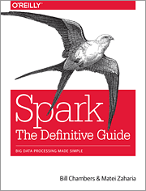

Main tools for the course (tentative…)
Infrastructure
Python stack


Data Visualization

Technologies Big Data Master MIDS/MFA/LOGOIS
2025-01-17


24 hours = 2 hours \(\times\) 12 weeks : classes + hands-on
Hands-on and homeworks using Jupyter/Quarto notebooks
Using a Docker image built for the course
Hands-on must be carried out using your own laptop
course : https://s-v-b.github.io/IFEBY310
Bookmark it !
Follow the steps described on the tools page:
Evaluation using homeworks and a final project
Find a friend: all work done by pairs of students
All your work goes in your private git repository and nowhere else: no emails !
All your homework will be using quarto files
Docker
docker ? What is it ?python env. and configuration files
docker
Have a look at https://s-v-b.github.io/IFEBY310/tools
Have a look at the Dockerfile to explain a little bit how the image is built
Perform a quick demo on how to use the docker image
And that’s it for logistics !
Moore’s Law: computing power doubled every two years between 1975 and 2012
Nowadays, less than two years and a half
Rapid growth of datasets: internet activity, social networks, genomics, physics, censor networks, IOT, …
Data size trends: doubles every year according to IDC executive summary
Data deluge: Today, data is growing faster than computing power
A bit is a value of either a 1 or 0 (on or off)
A byte is made of 8 bits
A kilobyte is \(1024 =2^{10}\) bytes
A megabyte is \(1 048 576=2^{20}\) B or \(1 024\) KB
A gigabyte is \(1 073 741 824=2^{30}\) B, \(1 024\) MB or \(1 048 576\) KB
A terabyte is \(1 099 511 627 776=2^{40}\) B, 1 024 GB or 1 048 576 MB.
A petabyte is 1 024 TB, 1 048 576 GB or 1 073 741 824 MB
\[1125899906842624 = 2^{50} \quad\text{Bytes}\]
You have every single second1:
At least 8,000 tweets sent
900+ photos posted on Instagram
Thousands of Skype calls made
Over 70,000 Google searches performed
Around 80,000 YouTube videos viewed
Over 2 million emails sent
There are1:
and we expected2:
Note that
More figures :
facebook daily logs: 60TB
1000 genomes project: 200TB
Google web index: 10+ PB
Cost of 1TB of storage: ~$35
Time to read 1TB from disk: 3 hours if 100MB/s
| Memory type | Latency(ns) | Latency(us) | (ms) | |
|---|---|---|---|---|
| L1 cache reference | 0.5 ns | |||
| L2 cache reference | 7 ns | 14x L1 cache | ||
| Main memory reference | 100 ns | 20x L2, 200x L1 | ||
| Compress 1K bytes with Zippy/Snappy | 3,000 ns | 3 us | ||
| Send 1K bytes over 1 Gbps network | 10,000 ns | 10 us | ||
| Read 4K randomly from SSD* | 150,000 ns | 150 us | ~1GB/sec SSD | |
| Read 1 MB sequentially from memory | 250,000 ns | 250 us | ||
| Round trip within same datacenter | 500,000 ns | 500 us | ||
| Read 1 MB sequentially from SSD* | 1,000,000 ns | 1,000 us | 1 ms | ~1GB/sec SSD, 4X memory |
| Disk seek | 10,000,000 ns | 10,000 us | 10 ms | 20x datacenter roundtrip |
| Read 1 MB sequentially from disk | 20,000,000 ns | 20,000 us | 20 ms | 80x memory, 20x SSD |
| Send packet US -> Europe -> US | 150,000,000 ns | 150,000 us | 150 ms | 600x memory |
traceroute to mathscinet.ams.org (104.238.176.204), 64 hops max
1 192.168.10.1 3,149ms 1,532ms 1,216ms
2 192.168.0.254 1,623ms 1,397ms 1,309ms
3 78.196.1.254 2,571ms 2,120ms 2,371ms
4 78.255.140.126 2,813ms 2,621ms 2,200ms
5 78.254.243.86 2,626ms 2,528ms 2,517ms
6 78.254.253.42 2,517ms 4,129ms 2,671ms
7 78.254.242.54 2,535ms 2,258ms 2,350ms
8 * * *
9 195.66.224.191 12,231ms 11,718ms 12,486ms
10 * * *
11 63.218.14.58 26,213ms 19,264ms 18,949ms
12 63.218.231.106 29,135ms 22,078ms 17,954msReading 1MB from disk = 100 x reading 1MB from memory
Sending packet from US to Europe to US = 1 000 000 x main memory reference
True in general, not always:
memory operations : fastest
disk operations : slow
network operations : slowest
Multiply all durations by a billion \(10^9\)
| Memory type | Latency | Human duration |
|---|---|---|
| L1 cache reference | 0.5 s | One heart beat (0.5 s) |
| L2 cache reference | 7 s | Long yawn |
| Main memory reference | 100 s | Brushing your teeth |
| Send 2K bytes over 1 Gbps network | 5.5 hr | From lunch to end of work day |
| SSD random read | 1.7 days | A normal weekend |
| Read 1 MB sequentially from memory | 2.9 days | A long weekend |
| Round trip within same datacenter | 5.8 days | A medium vacation |
| Read 1 MB sequentially from SSD | 11.6 days | Waiting for almost 2 weeks for a delivery |
| Disk seek | 16.5 weeks | A semester in university |
| Read 1 MB sequentially from disk | 7.8 months | Almost producing a new human being |
| Send packet US -> Europe -> US | 4.8 years | Average time it takes to complete a bachelor’s degree |
Large data don’t fit on a single hard-drive
One large (and expensive) machine can’t process or store all the data
For computations how do we stream data from the disk to the different layers of memory ?
Concurrent accesses to the data: disks cannot be read in parallel
Combine several machines containing hard drives and processors on a network
Using commodity hardware: cheap, common architecture i.e. processor + RAM + disk
Scalability = more machines on the network
Partition the data across the machines
Dealing with distributed computations adds software complexity
Problems sketched in

Next Generation Dabases describes the challenges faces by database industry between 1995 and 2015, that is during the onset of the data deluge
Schedule, manage and coordinate threads and resources using appropriate software
Locks to limit access to resources
Replicate data for faster reading and reliability
High Performance Computing (HPC)
Parallel computing
Note
No
Google committed to a number of key tenants when designing its data center architecture. Most significantly —and at the time, uniquely— Google committed to massively parallelizing and distributing processing across very large numbers of commodity servers.
Google also adopted a “Jedis build their own lightsabers” attitude: very little third party —and virtually no commercial— software would be found in the Google architecture.
Build was considered better than buy at Google.
Many technologies combining software and cloud computing

Often used with/for with Machine Learning (or AI)
HadoopMR (Hadoop Map Reduce) and more recently Spark and Dask cope with these challengesThey run on clusters (several machine on a network), managed by a resource manager such as :
A resource manager ensures that the tasks running on the cluster do not try to use the same resources all at once
Apache SparkSpark
The course will focus mainly on Spark for big data processing
Spark is an enterprise standard The predecessor of Spark is Hadoop
See Chapter 2 in Next Generation Dabases
HadoopHadoop has a simple API and good fault tolerance (tolerance to nodes failing midway through a processing job)
The cost is lots of data shuffling across the network
With intermediate computations written to disk over the network which we know is very time expensive
It is made of three components:
HDFS (Highly Distributed File System) inspired from GoogleFileSystem, see https://ai.google/research/pubs/pub51
YARN (Yet Another Ressource Negociator) for processing management.
MapReduce inspired from Google for processing again.
https://research.google.com/archive/mapreduce.html
The Hadoop 1.0 architecture is powerful and easy to understand, but it is limited to MapReduce workloads and it provides limited flexibility with regard to scheduling and resource allocation.
In the Hadoop 2.0 architecture, YARN (Yet Another Resource Negotiator or, recursively, YARN Application Resource Negotiator) improves scalability and flexibility by splitting the roles of the Task Tracker into two processes.
A Resource Manager controls access to the clusters resources (memory, CPU, etc.) while the Application Manager (one per job) controls task execution.
Guy Harrison. Next Generation Database

SparkAdvantages of Spark over HadoopMR ?
Scala, Python, R, Java APIsSparkSQL, SparkStreaming, etc.Disadvantages of Spark over HadoopMR ?
Spark requires servers with more CPU and more memory
Spark is much faster than Hadoop
Hadoop uses disk and network
Spark tries to use memory as much as possible for operations while minimizing network useSpark versus Hadoop
| HadoopMR | Spark | |
|---|---|---|
| Storage | Disk | in-memory or disk |
| Operations | Map, reduce | Map, reduce, join, sample, … |
| Execution model | Batch | Batch, interactive, streaming |
| Programming environments | Java | Scala, Java, Python, R |
Spark and Hadoop comparisonFor logistic regression training (a simple classification algorithm which requires several passes on a dataset)


Spark stack
Spark stack
Spark can run “everywhere”
https://mesos.apache.org: Apache Mesos abstracts CPU, memory, storage, and other compute resources away from machines (physical or virtual), enabling fault-tolerant and elastic distributed systems to easily be built and run effectively. Mesos is built using the same principles as the Linux kernel, only at a different level of abstraction. The Mesos kernel runs on every machine and provides applications (e.g., Hadoop, Spark, Kafka, Elasticsearch) with API’s for resource management and scheduling across entire datacenter and cloud environments.
https://kubernetes.io Kubernetes, also known as K8s, is an open-source system for automating deployment, scaling, and management of containerized applications.
Weeks 1, 2 and 3
The Python data-science stack for medium-scale problems
Weeks 4 and 5
Introduction to spark and its low-level API
Weeks 6, 7 and 8 Spark’s high level API: .stress[spark.sql]. Data from different formats and sources
Week 9
Run a job on a cluster with spark-submit, monitoring, mistakes and debugging
Weeks 10, 11, 12
Introduction to spark applications and spark-streaming


Spark Documentation Website
http://spark.apache.org/docs/latest/
API docs
http://spark.apache.org/docs/latest/api/scala/index.html
http://spark.apache.org/docs/latest/api/python/
Databricks learning notebooks
https://databricks.com/resources
StackOverflow
https://stackoverflow.com/tags/apache-spark
https://stackoverflow.com/tags/pyspark
More advanced
http://books.japila.pl/apache-spark-internals/
Misc.
Next Generation Databases: NoSQLand Big Data by Guy Harrison
Data Pipelines Pocket Reference by J. Densmore

Above all

Wonder what a datacenter looks like ?
Wonder what a datacenter looks like ?

Wonder what a datacenter looks like ?
IFEBY030 – Technos Big Data – M1 MIDS/MFA/LOGOS – UParis Cité